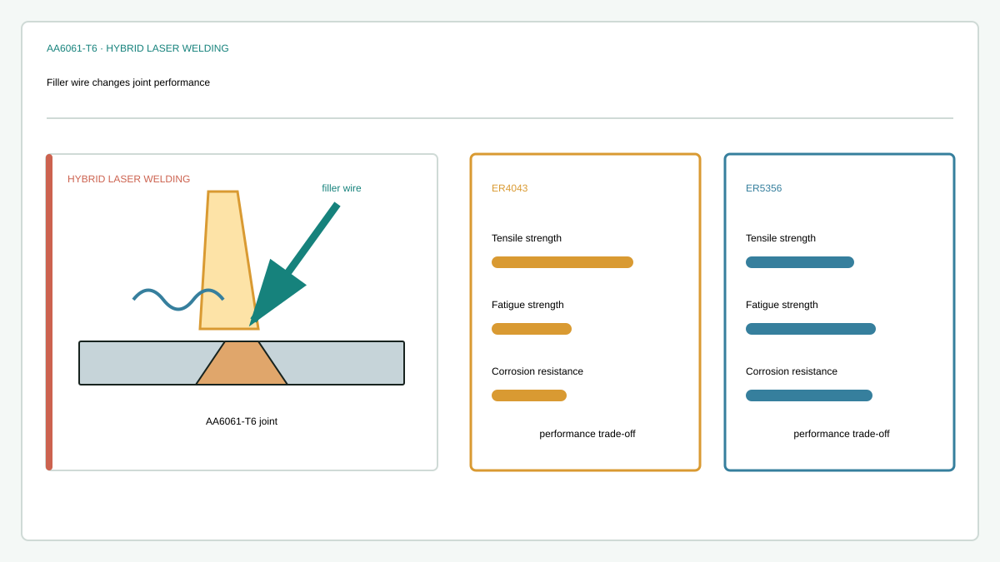

Journal article
Effect of filling materials on the microstructure and properties of hybrid laser welded Al-Mg-Si alloys joints
Research at a glance
{kind=link}

Abstract
A serious investigation was conducted to examine the influence of filling materials on the microstructure and properties of hybrid laser welded AA6061-T6 joints. The results of the tensile tests showed that the welded joint with ER4043 filling materials had higher tensile strength than that with ER5356 filling material. Based on the results obtained a strength model was built to predict and explain the enhancement of the yield strength of the hybrid laser welded AA6061-T6 joint with different welding wires. In contrast to the tensile strength, the ER4043 joint showed lower fatigue strength than that of the ER5356 joint due to extensive presence of micropores in fusion zone. Further, the corrosion experiment illustrated that the ER4043 joint had poorer resistance to the corrosive attack under 3.5% NaCl solution. A summary was made on the performance of both welded joints to shed new insights on selecting appropriate filling materials when welding AA6061-T6 by hybrid laser welding method.
Keywords
Recommended citation
Shaohua Yan, Bobin Xing, Haiyang Zhou, Yi Xiao, Qing-Hua Qin, and Hui Chen (2018). Effect of filling materials on the microstructure and properties of hybrid laser welded Al-Mg-Si alloys joints. Materials Characterization, 144, 205–218. https://doi.org/10.1016/j.matchar.2018.07.018